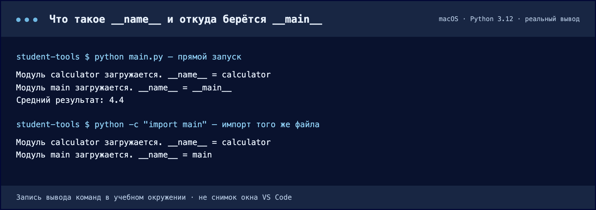
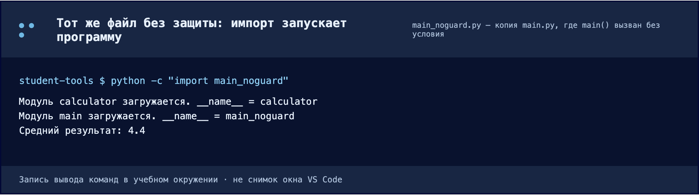
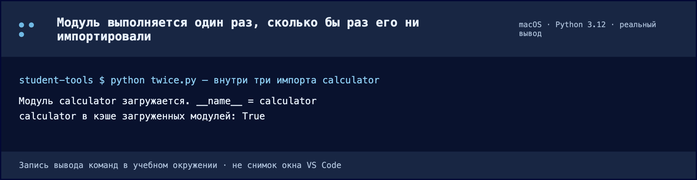

Один файл становится тремя
Разделяем расчёт, форматирование и запуск. Читаем импорт как связь между частями.
Сначала проблема, потом новый файл
На двадцати строках всё видно сразу. Но если добавить работу с пользователями, базой данных и отчётами, файл станет труднее читать и изменять. Мы разделяем код по ответственности: при смене оформления не должны искать формулу среди кода вывода.
Модуль в нашем примере — файл .py. Он может содержать функции, классы и код верхнего уровня. Учебный модуль книги и Python-модуль — разные значения слова: в одной теме у нас несколько небольших файлов.
соединяет→calculator.py
считает+formatter.py
оформляет
Перенесите функции, сохранив поведение
- Где
- Explorer: корень student-tools, рядом с main.py.
- Действие
- Создайте calculator.py и formatter.py. Перенесите функции. Замените main.py кодом ниже.
- Результат
- В корне три .py-файла; в main.py нет копий двух вынесенных функций.
- Проверка
- Сохраните все файлы и выполните python main.py: ожидается 4.40.
В корне student-tools создайте два файла. Перенесите в них соответствующие функции из main.py. Не оставляйте вторые копии: иначе при исправлении одной другая может остаться старой.
def calculate_average(values: list[int]) -> float:
if not values:
raise ValueError("Список оценок не должен быть пустым")
return sum(values) / len(values)def format_average(value: float) -> str:
return f"Средний результат: {value:.2f}"from rich.console import Console
from calculator import calculate_average
from formatter import format_average
def main():
values = [5, 4, 5, 3, 5]
average = calculate_average(values)
console = Console()
console.print(f"[bold green]{format_average(average)}[/bold green]")
if __name__ == "__main__":
main()python main.pyРезультат снова Средний результат: 4.40. Изменилось расположение кода, а не задача программы. Если результат другой, сначала проверьте перенос функций и импорты.
Как читать import
import calculator
result = calculator.calculate_average([5, 4, 5])
from calculator import calculate_average
result = calculate_average([5, 4, 5])Обе строки загружают один и тот же файл. Разница только в том, какое имя после этого появляется в вашем файле и как вы обращаетесь к функции.
Видно, откуда пришла функция: имя модуля остаётся в строке вызова. Удобно, когда из модуля нужно много всего или когда имена в разных модулях совпадают.
Расширение .py в импорте не пишется: там указывают имя модуля, а не файла. Не используйте from calculator import * — такая запись втягивает все имена сразу, и по коду становится не видно, откуда взялась функция.
При первом обычном импорте Python выполняет код верхнего уровня модуля. Определение функции создаёт функцию, но не вызывает её тело. Поэтому случайный print() снаружи функции сработает при импорте.
Зачем условие __name__
Один и тот же файл .py живёт в двух режимах. Его можно запустить — python main.py. И его можно импортировать — тогда его код выполняет не человек, а другой файл строкой import. Эти две строки в конце файла нужны для того, чтобы в первом режиме программа стартовала, а во втором — нет.
Шаг 1. Что такое __name__
Когда Python загружает файл, он сам создаёт в нём несколько служебных переменных. Одна из них — __name__. Это обычная строка с именем модуля, и вы ничего не пишете, чтобы она появилась: её заполняет Python. Правило заполнения одно:
- файл, который вы запустили сами (
python main.pyилиpython -m app.main), получает__name__ == "__main__"; - любой файл, который попал в программу через import, получает своё имя модуля:
"calculator","app.services.calculator".
Строка "__main__" означает не «главный файл проекта», а «этот файл сейчас запущен напрямую». Один и тот же main.py в разных ситуациях получает разные значения — это легко увидеть, если временно допечатать их.
print("Модуль main загружается. __name__ =", __name__)
Сверху файл запущен: у main.py __name__ равно __main__, поэтому вызвался main() и появился результат. Снизу тот же файл импортирован: __name__ стало main, и расчёт не выполнялся. Обратите внимание на calculator: он в обоих случаях получил имя calculator, потому что попал в программу через import.
Скачать текст вывода ↓ · Нажмите на изображение, чтобы увеличить.Шаг 2. Импорт выполняет файл целиком
Это главная причина, по которой защита вообще нужна. import calculator — не «подключение заголовков», а исполнение всего файла сверху вниз. Разница только в том, что именно там написано:
def calculate_average(...):— при импорте создаёт функцию, но не выполняет её тело. Тело сработает только тогда, когда функцию вызовут.print(...),main(), чтение файла, запрос в сеть на верхнем уровне (то есть без отступа, не внутри функции) — выполнятся сразу, при первом же импорте.
Поэтому строка main(), оставленная в конце файла без условия, превращает любой импорт этого модуля в запуск программы.

Здесь main() вызван на верхнем уровне, без условия. Файл никто не запускал — его только импортировали, — но программа всё равно посчитала и напечатала результат. Именно это ломает тесты из главы 2.6: они импортируют ваши модули, а не запускают их.
Скачать текст вывода ↓ · Нажмите на изображение, чтобы увеличить.Шаг 3. Как это читается вместе
if __name__ == "__main__":
main()Дословно: «если этот файл сейчас запущен напрямую — вызови main()». При импорте условие ложно, вызова нет, а все определения из файла всё равно доступны. Отсюда рабочее правило: под условием — только запуск, определения — всегда снаружи. Внутрь if не переносят def и import, иначе при импорте они пропадут.
Файл запущен напрямую: определения созданы и программа стартовала. Это обычный запуск вашей программы.
Шаг 4. Модуль выполняется один раз
Ещё одна деталь, из-за которой импорт кажется непредсказуемым. Первый import calculator действительно выполняет файл. Все последующие импорты того же модуля — в этом же запуске программы, в любом файле — не выполняют его заново: Python берёт уже загруженный модуль из своего кэша sys.modules.

В файле три обращения к calculator подряд, а сообщение о загрузке напечаталось один раз. Поэтому «лишний» импорт не замедляет программу, но и код верхнего уровня во второй раз не сработает — рассчитывать на его повторное выполнение нельзя.
Скачать текст вывода ↓ · Нажмите на изображение, чтобы увеличить.Названия помогают импортам
Используйте короткие имена маленькими латинскими буквами, слова разделяйте подчёркиванием: user_service.py, calculator.py. Пробелы и дефисы мешают обычному синтаксису импорта. Кириллица допустима в некоторых идентификаторах Python, но латиница — более переносимое командное соглашение.
Проверьте себя · Почему калькулятор не должен импортировать main?
main уже использует калькулятор. Обратная связь создаёт цикл и связывает вычисления с запуском. Данные передаются функции аргументами, результат возвращается через return.
Документация к теме
Python: venv · Python: модули и пакеты · VS Code: Python environments · pip freeze